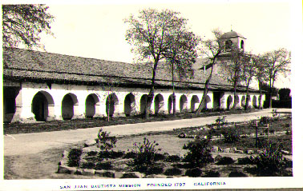

|
 - Field Program in Archaeology - SBS 260s/360s: Archaeology
of a California Mission San Carlos Borromeo del Río Carmelo, California and or Old Mission San Juan Bautista, California
|
|
| What? |
A Field School with Dr. Ruben Mendoza, Director of the Institute of Archaeology, CSU Monterey Bay |
| Questions?
|
Have you ever wanted to do archaeology but didn’t know where to start? Are you an archaeology student who desires an authentic hands-on lab and field learning experience before you graduate? Or, do you have a desire to experience and discover California history for yourself? If your answer is yes to any of these questions, then this field school is for you!
|
| Course Description
|
This course consists of a field school and a project-based learning lab in archaeology and archival research methods. Students will be introduced to the archaeology and history of the early California mission communities of the Central Coast by way of the Internet and hands-on study of archaeological and historical materials from either Old Mission San Juan Bautista, San Carlos Borromeo del Río Carmelo, and or related early California missions. Having studied the lab methods by which archaeologists examine and identify the cultural importance of artifacts from a California mission, students will spend approximately twelve to fourteen weeks conducting excavations at either of the 200+ year old California missions in question. Final projects will be posted at the Institute’s web site located at: http://archaeology.csumb.edu.
|
| What is a Field School?
|
A field school is the hands-on lab and field portion of your training as an archaeologist. The field school experience serves to guide you through the process of survey, excavation, artifact and specimens analysis, the recording of data and observations, and finally, interpretation of that data. Your field experience will prepare you to conduct basic survey and mapping, photography, and the preparation of detailed journals regarding the results of your fieldwork. The lab portion of the field program will provide you direct access to the hands-on study and interpretation of Spanish colonial, Mexican, and early American period artifacts and specimens.
|
| Where Will the Field School
Take Place?
|
During the excavation portion of the project you will conduct excavations in the forecourt of the original 207-year old Carmel Mission Basilica Church located in Carmel, California. The Carmel Mission is located just off of Highway 1 on Rio Road. The site lies approximately 15 to 20 minutes south of the CSU Monterey Bay campus at Seaside, California.
|
| About Dr. Ruben Mendoza
|
Dr. Ruben Mendoza is the Director of the Institute of Archaeology at CSU Monterey Bay and one of its founding faculty. He is the past President of the Association of Latina and Latino Anthropologists and a charter member on the board of directors of the California Missions Foundation. In addition, he has numerous publications — and multimedia projects — to his credit concerning the California missions and Spanish colonial archaeology. His recent excavations and scholarly work at Mission San Juan Bautista (1995-present) have been instrumental in the understanding of that Mission’s colorful, yet often misunderstood, past. Dr. Mendoza's work at the Carmel Mission was initially undertaken in January of 2003 at the request of Diocese of Monterey Curator Sir Richard Joseph Menn. For further info please contact Dr. Mendoza at 831-582-3760, or by e-mail at ruben_mendoza@csumb.edu
|